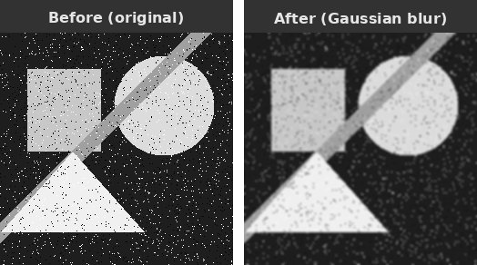

We implement a parallel 2D image convolution using tf::Taskflow::for_each_by_index with a two-dimensional tf::IndexRange. This example demonstrates how a naturally 2D iteration space maps directly onto multidimensional index ranges and why output pixels are unconditionally safe to compute in parallel.
Convolution is one of the most fundamental operations in image processing and computer vision. Given an input image and a small matrix called a kernel (or filter), convolution produces an output image where each output pixel is a weighted sum of a small neighbourhood of input pixels, with the weights given by the kernel. Depending on the kernel, convolution can blur an image (Gaussian blur), sharpen it, detect edges (Sobel filter), or emboss it. It is also the core operation inside every convolutional neural network (CNN). To see how it works, consider the following 5x5 input image and a 3x3 kernel:
The kernel is placed over a 3x3 window of the input centred at output pixel (2, 2). Each input value in the window is multiplied by the corresponding kernel weight, and the products are summed to produce the output value. For the Gaussian-like kernel shown (weights 1/2/4 with divisor 16), this gives a weighted average that smooths high-frequency noise. The kernel then slides to every other position in the image, and the same multiply-accumulate operation is repeated. Each output pixel depends only on its own input window and the kernel; it is completely independent of every other output pixel. This independence is what makes convolution embarrassingly parallel.
Let us trace the computation for a 5x5 image with the 3x3 kernel below, computing output pixel (2, 2) by hand. The input image:
The 3x3 Gaussian kernel (sum = 16, used as divisor for normalisation):
The 3x3 window centred at output pixel (2, 2) covers input rows 1 to 3 and columns 1 to 3:
The weighted sum is:
For interior pixels the window always fits inside the image. For pixels near the border, the window extends outside the image boundary. A common strategy is boundary clamping: any out-of-bounds row or column index is clamped to the nearest valid index, effectively extending the image edge values outward.
The 2D image convolution maps perfectly tf::IndexRange<int,2> because every output pixel (i, j) depends only on a fixed neighbourhood in the input and the kernel. Additionally, since two output pixels write to the same memory location, all output pixels can be computed simultaneously with no synchronization at all. As a result, the iteration space is inherently 2D: output row i ranges over [0, output_rows) and output column j ranges over [0, output_cols). tf::IndexRange<int, 2> expresses this directly as the Cartesian product of two 1D ranges, and tf::Taskflow::for_each_by_index partitions this 2D space into axis-aligned sub-boxes and assigns each sub-box to a worker.
The following figure illustrates how a 6×6 output image is split into four sub-boxes, one per worker:
Each worker processes its assigned sub-box independently, writing to a disjoint region of the output image. No locks, atomics, or barriers are needed at any point during the sweep.
The complete self-contained example below applies a 3×3 Gaussian blur to a hand-constructed 6×6 input image. Boundary pixels use clamped addressing.
The program output for the hand-constructed input is:

The image above demonstrates the effect of Gaussian blur. The left figure shows the original image with geometric shapes and salt-and-pepper noise, while the right figure shows the output after applying a 5x5 Gaussian blur: noise speckles are suppressed and sharp edges are softened because each output pixel is replaced by a weighted average of its neighbourhood, diluting isolated extreme values and smoothing abrupt transitions.
There are a few important design points worth noting for this example, which also apply generally to parallel convolution algorithms:
(i, j) writes exclusively to output[i*cols+j]. The input image is read-only during the sweep. No atomic operations or mutexes are needed, and the parallel speedup scales directly with the number of workers up to the image size.std::clamp calls handle boundary pixels without any special-casing outside the inner loop. Alternative boundary strategies (zero-padding, mirror, wrap-around) require only changing the two index computations inside the kernel; the parallel structure is identical for all of them.tf::IndexRange<int,2> instead of a flat 1D range over all pixels preserves the row-column structure of the problem. Each sub-box delivered to the kernel is a geometrically contiguous tile of the output image, which keeps the input window accesses for adjacent output pixels close together in memory and benefits cache reuse across the inner loop over columns.ksize*ksize multiply-add operations regardless of its position, so the workload is perfectly uniform. tf::StaticPartitioner is the right choice here: it has the lowest scheduling overhead and delivers optimal load balance for uniform workloads. There is no reason to pay for the runtime work-stealing of guided or dynamic partitioners when every tile does the same amount of work.For large images or deep filter stacks, cache locality of the input window accesses becomes the dominant performance factor. Tiling the output into cache-sized sub-boxes (so that the corresponding input windows fit in L2 or L3 cache) can significantly improve throughput. tf::IndexRange<int,2> naturally expresses this tiling: simply choose a tile size that fits the relevant input region in cache and let the partitioner handle distribution across workers.